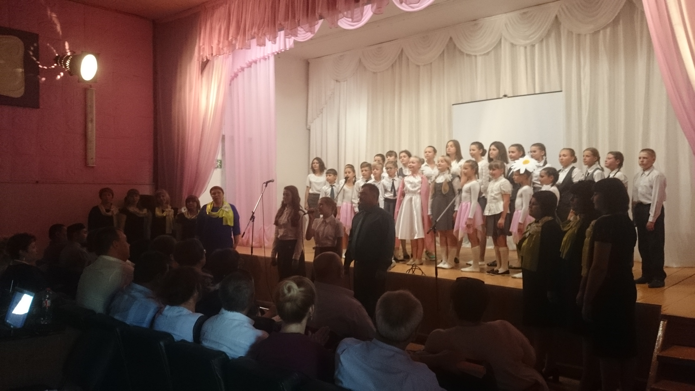
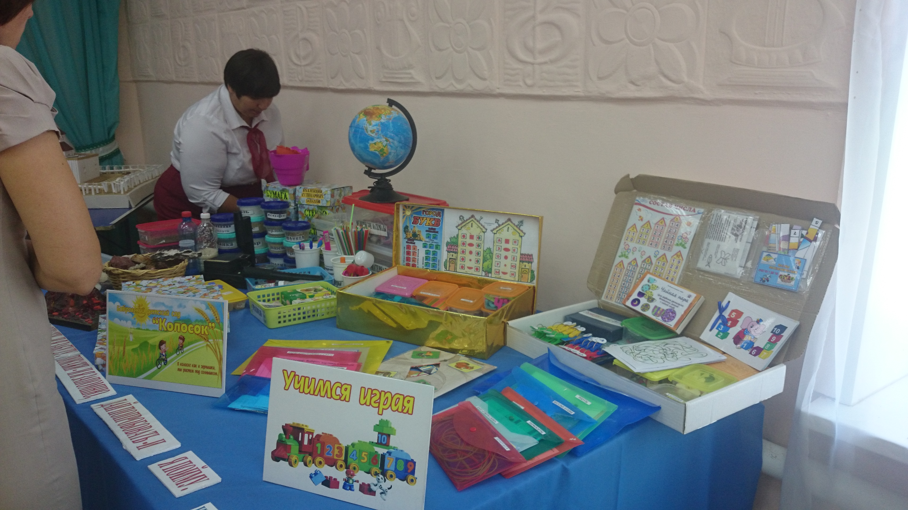
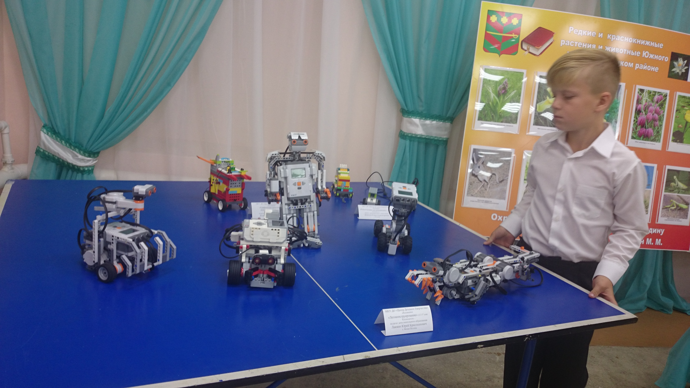

Специалисты ДЮТТ выступили в Троицком Районе в рамках августовских совещаний
28 августа 2017 г. 9:26Дом юношеского технического творчества Челябинской области принял участие в августовском собрании работников образования Троицкого муниципального района.
Совещание началось с выступления детских коллективов. Ребята в своих номерах обратились к учителям и воспитателям с привествием, показав свою готовность к учебному году и встрече с педагогами.
После развлекательной части, слово взялаглава муниципального Троицкого муниципального района Людмила Владимировна Шаталова. Она проговорила о том, что необходимо воспитывать, обучать и развивать детей так, чтобы получив высшее образование, они возвращались в родной край в качестве ведущих специалистов во всех отраслях муниципального района.
Ольга Фёдоровна Михайловская, начальник Управления по делам образования представила общий доклад об итогах обучения и проговорила реальные проблемы в образовательных процессах муниципального района.
Далее выступили директора школ и детских садов. После их презентаций последовало выступление директора Центра детского творчества Елена Яковлева Гончарова. Она рассказала о развитие технического и других видов творчества в своём образовательном учреждении, об успехах детей и мероприятиях, которые они проводят и в которых участвуют.
В рамках собрания специалисты ДЮТТ также представили свой план мероприятий на новый учебный год по развитию технического творчества и предложили свою помощь в открытии кружков, дистанционного обучения, обучении педагогов - специалисты готовы предоставить образовательным учреждениям все необходимые ресурсы.
«Уже этой осенью: 20 сентября, 20 октября, 20 ноября формируются группы педагогов для практики по авиа-ракето- и судомоделированию. Это не психология, это отработка конкретных методик. Также для всех открыты коворкинг-площадки. Мы приглашаем на отработку тем к нашим педагогам только лучших - рукводителей ассоциаций, тренеров-победителей и представителей допобразования из Москвы и Санкт-Петербурга», - комментирует директор ДЮТТ Владислав Николаевич Халамов.
Остальные доклады прозвучали в рамках секционных совещаний,где каждый специалист в своей отрасли поделился о достижениях, новых проектах и планах на следующий учебный год. В заключении собрания прошла церемония награждения работников образования Троицкого муниципального района, где также прозвучало напутствие молодым специалистам.